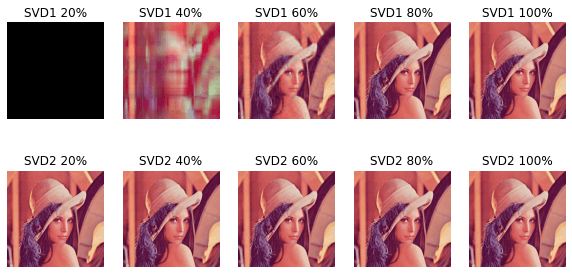

正文：2 核心篇
5 将研究对象形式化——线性代数基础
5.3.3 矩阵的创建
直接生成
1 2 3 4 5 6 7 8 9 10 11 12 13 14 15 import numpy as np1 , 2 , 3 , 4 ], [5 , 6 , 7 , 8 ], [9 , 10 , 11 , 12 ]]print ("A=" , A)print ("arr1=\n" , arr1)1 , 2 , 3 , 4 ), (5 , 6 , 7 , 8 ), (9 , 10 , 11 , 12 ))print ("B=" , B)print ("arr2=\n" , arr2)print ("type(A)=" , type (A))print ("type(B)=" , type (B))print ("type(arr1)=" , type (arr1))print ("arr1.shape=" , arr1.shape)
A= [[1, 2, 3, 4], [5, 6, 7, 8], [9, 10, 11, 12]]
arr1=
[[ 1 2 3 4]
[ 5 6 7 8]
[ 9 10 11 12]]
B= ((1, 2, 3, 4), (5, 6, 7, 8), (9, 10, 11, 12))
arr2=
[[ 1 2 3 4]
[ 5 6 7 8]
[ 9 10 11 12]]
type(A)= <class 'list'>
type(B)= <class 'tuple'>
type(arr1)= <class 'numpy.ndarray'>
arr1.shape= (3, 4)
间接创建
1 2 3 4 5 6 import numpy as np2 , 3 ))print ("arr1=\n" , arr1)3 , 30 , size=[2 , 3 ]) print ("arr2=\n" , arr2)
arr1=
[[0.7888749 0.29995777 0.79464025]
[0.48565204 0.77377983 0.84873221]]
arr2=
[[19 17 7]
[ 4 25 14]]
改变矩阵的大小
1 2 3 4 5 6 7 8 9 import numpy as np1 , 2 , 3 , 4 , 5 , 6 ]2 , 3 )3 , 2 )print ("B=" , B)print ("C1=\n" , C1)print ("C2=\n" , C2)
B= [1 2 3 4 5 6]
C1=
[[1 2 3]
[4 5 6]]
C2=
[[1 2]
[3 4]
[5 6]]
矩阵元素的存取
array([1, 2, 3])
array([[1, 2, 3],
[4, 5, 6]])
array([[1, 2],
[5, 6]])
array([2, 4, 6])
array([[1, 2],
[3, 4],
[5, 6]])
array([[1, 3],
[4, 6]])
6
6
5.3.4 向量的创建
1 2 3 4 5 6 7 8 9 10 import numpy as np1 , 2 , 3 , 4 , 5 ]]1 ], [2 ], [3 ], [4 ], [5 ]]print ("C=\n" , C)print ("D=\n" , D)print ("C.shape" , np.shape(C))print ("D.shape" , np.shape(D))
C=
[[1 2 3 4 5]]
D=
[[1]
[2]
[3]
[4]
[5]]
C.shape (1, 5)
D.shape (5, 1)
5.4 特殊的矩阵
零矩阵
array([0., 0., 0., 0., 0., 0., 0., 0., 0., 0.])
array([[0., 0., 0., 0.],
[0., 0., 0., 0.]])
1 np.array([np.zeros(10 )])
array([[0., 0., 0., 0., 0., 0., 0., 0., 0., 0.]])
单位矩阵
array([[1., 0., 0.],
[0., 1., 0.],
[0., 0., 1.]])
array([[1., 0., 0.],
[0., 1., 0.],
[0., 0., 1.]])
对角矩阵
1 2 arr1 = np.diag([1 , 2 , 3 ])
array([[1, 0, 0],
[0, 2, 0],
[0, 0, 3]])
array([1, 2, 3])
上三角矩阵
1 2 A = np.array([[1 , 2 , 3 , 4 ], [5 , 6 , 7 , 8 ], [9 , 10 , 11 , 12 ], [13 , 14 , 15 , 16 ]])0 )
array([[ 1, 2, 3, 4],
[ 0, 6, 7, 8],
[ 0, 0, 11, 12],
[ 0, 0, 0, 16]])
array([[ 1, 0, 0, 0],
[ 5, 6, 0, 0],
[ 9, 10, 11, 0],
[13, 14, 15, 16]])
判断矩阵是否相等
1 2 3 A = np.array([[1 , 2 , 3 ], [4 , 5 , 6 ]])1 , 2 , 3 , 4 , 5 , 6 ]).reshape(2 , 3 )
True
5.5 矩阵基本操作
5.5.3 矩阵乘法
1 2 3 A = np.array([[1 , 2 ], [1 , 0 ]])2 , 2 ])
array([[2, 4],
[2, 0]])
array([[2, 0],
[0, 0]])
array([[2, 0],
[0, 0]])
1 2 3 A = np.mat([[1 , 2 ], [1 , 0 ]])2 , 2 ]))
matrix([[2, 4],
[2, 0]])
5.5.5 矩阵的乘方
只有方阵才可进行乘方运算.对 array 类型, 矩阵的乘方要经多次 dot 运算得到, 对 matrix 类型, 可以通过 ** 得到, array 类型的 ** 是每个元素的 n 次方
1 2 3 4 A = [[1 , 2 , 3 ], [4 , 5 , 6 ], [7 , 8 , 9 ]]
array([[ 468, 576, 684],
[1062, 1305, 1548],
[1656, 2034, 2412]])
array([[ 1, 8, 27],
[ 64, 125, 216],
[343, 512, 729]], dtype=int32)
matrix([[ 468, 576, 684],
[1062, 1305, 1548],
[1656, 2034, 2412]])
5.6.1 转置矩阵
利用转置矩阵创建对称矩阵
1 2 3 4 5 6 7 8 9 import numpy as np1 , 16 , size=[3 , 3 ])print ("arr1=\n" , arr1)print ("arr2=\n" , arr2)print (np.allclose(arr2, arr2.T))
arr1=
[[ 8 14 15]
[13 13 12]
[ 3 8 12]]
arr2=
[[ 8 14 15]
[14 13 12]
[15 12 12]]
True
5.6.2 逆矩阵
1 2 3 4 5 6 7 8 9 10 import numpy as np1 , 2 ], [2 , 5 ]]print ("C1_inverse=\n" , C1_inverse)print ("C2_inverse=\n" , C2_inverse)print ("C1.dot(C1_inverse)=\n" , C1.dot(C1_inverse))
C1_inverse=
[[ 5. -2.]
[-2. 1.]]
C2_inverse=
[[ 5. -2.]
[-2. 1.]]
C1.dot(C1_inverse)=
[[1. 0.]
[0. 1.]]
matrix([[ 5., -2.],
[-2., 1.]])
“导致降维”, 行列式为 0 的矩阵不可逆
1 2 3 4 try :0 , 0 ], [0 , 1 ]]) ** (-1 )as e:print (e)
Singular matrix
5.7.4 行列式的计算
1 np.linalg.det(np.diag([1 , 2 , 3 , 4 ]))
23.999999999999993
5.8.4 矩阵的秩
1 np.linalg.matrix_rank(np.diag([1 , 2 , 3 ]))
3
1 np.linalg.matrix_rank(np.diag([1 , 2 , 0 ]))
2
5.9.1 向量的内积
1 2 3 4 5 A = [[1 , 2 , 3 ]]4 , 5 , 6 ]]3 , 1 ) 3 , 1 )
array([[32]])
5.9.2 向量的长度
1 2 A = np.array([[0 , 3 , 4 ]])
5.0
5.9.4 标准正交基
定义 5.17 在复数范围内满足A T A = A A T = E A^TA=AA^T=E A T A = A A T = E A A A
综合实例——线性代数在实际问题中的应用
解方程组：
{ x + 2 y + z = 7 2 x − y + 3 z = 7 3 x + y + 2 z = 1 8 \left\{\begin{matrix}
x + 2y + z = 7
\\ 2x - y + 3z = 7
\\ 3x + y + 2z =18
\end{matrix}\right.
⎩ ⎨ ⎧ x + 2 y + z = 7 2 x − y + 3 z = 7 3 x + y + 2 z = 1 8
1 2 3 4 5 6 import numpy as np1 , 2 , 1 ], [2 , -1 , 3 ], [3 , 1 , 2 ]])7 , 7 , 18 ]).reshape(3 , 1 )
matrix([[ 1, 2, 1, 7],
[ 2, -1, 3, 7],
[ 3, 1, 2, 18]])
1 利用逆矩阵求A X = B AX=B A X = B X = A − 1 B X=A^{-1}B X = A − 1 B
matrix([[ 7.],
[ 1.],
[-2.]])
matrix([[ 7.],
[ 7.],
[18.]])
2 利用 np.linalg.solve()
matrix([[ 7.],
[ 1.],
[-2.]])
3 利用 Sympy 库的 solve 函数
1 2 3 4 5 6 7 import sympyfrom sympy.abc import x, y, z2 * y + z - 7 , 2 * x - y + 3 * z - 7 , 3 * x + y + 2 * z - 18 ]
{x: 7, y: 1, z: -2}
解具有无穷解的方程组
{ x + 2 y + z − 2 w = 0 2 x + 3 y − w = 0 x − y − 5 z + 7 w = 0 \left\{\begin{matrix}
x + 2y + z - 2w = 0
\\ 2x + 3y - w = 0
\\ x - y - 5z + 7w = 0
\end{matrix}\right.
⎩ ⎨ ⎧ x + 2 y + z − 2 w = 0 2 x + 3 y − w = 0 x − y − 5 z + 7 w = 0
1 2 3 4 5 6 import numpy as np1 , 2 , 1 , -2 ],2 , 3 , 0 , -1 ],1 , -1 , -5 , 7 ]])
2
1 2 3 4 5 6 import sympyfrom sympy.abc import x, y, z, w2 * y + z - 2 * w, 2 * x + 3 * y - w, x - y - 5 * z + 7 * w]
{x: -4*w + 3*z, y: 3*w - 2*z}
1 2 3 4 A = {z:1 , w:2 }float (result[x].evalf(subs=A))float (result[y].evalf(subs=A))
(-5.0, 4.0)
例 5.18 获取数据集的数据 读取 csv 文件
1 2 3 4 5 import pandas as pdimport numpy as np"iris.csv" )
5.12 习题
(1)
分别使用三种方法求线性方程组的解
{ x + y + z = 2 x + 2 y + 4 z = 3 x + 3 y + 9 z = 5 \left \{ \begin{matrix}
x+y+z=2
\\x+2y+4z=3
\\x+3y+9z=5
\end{matrix}\right .
⎩ ⎨ ⎧ x + y + z = 2 x + 2 y + 4 z = 3 x + 3 y + 9 z = 5
1
1 2 3 4 5 6 7 8 import numpy as np1 , 1 , 1 ],1 , 2 , 4 ],1 , 3 , 9 ]])2 , 3 , 5 ]).reshape(3 , 1 )
matrix([[1, 1, 1, 2],
[1, 2, 4, 3],
[1, 3, 9, 5]])
matrix([[ 2. ],
[-0.5],
[ 0.5]])
2
matrix([[ 2. ],
[-0.5],
[ 0.5]])
3
1 2 3 4 5 import sympyfrom sympy.abc import x, y, z2 , x + 2 * y + 4 * z - 3 , x + 3 * y + 9 * z - 5 ]
{x: 2, y: -1/2, z: 1/2}
(2)
分别创建 3 * 4 阶和 4 * 5 阶的矩阵，元素值为 1-20 的随机整数，计算着两个矩阵的乘积，求这两个矩阵的秩
1 2 3 4 5 import numpy as np1 , 20 , size=[3 , 4 ])1 , 20 , size=[4 , 5 ])
(array([[ 2, 18, 16, 6],
[19, 1, 12, 19],
[11, 9, 18, 17]]),
array([[ 7, 14, 14, 14, 6],
[11, 10, 11, 8, 10],
[ 4, 3, 8, 4, 11],
[11, 10, 14, 1, 3]]))
array([[342, 316, 438, 242, 386],
[401, 502, 639, 341, 313],
[435, 468, 635, 315, 405]])
1 np.linalg.matrix_rank(A)
3
1 np.linalg.matrix_rank(B)
4
(3)
求下面矩阵的逆矩阵，求逆矩阵时要先求行列式，行列式不为 0 时逆矩阵存在，之后再进行求逆操作
A = [ 1 2 3 2 2 1 3 4 3 ] A=\begin{bmatrix}
1 & 2 & 3 \\
2 & 2 & 1 \\
3 & 4 & 3
\end{bmatrix}
A = ⎣ ⎡ 1 2 3 2 2 4 3 1 3 ⎦ ⎤
1 2 3 4 5 6 import numpy as np1 , 2 , 3 ],2 , 2 , 1 ],3 , 4 , 3 ]])
1.9999999999999993
matrix([[ 1. , 3. , -2. ],
[-1.5, -3. , 2.5],
[ 1. , 1. , -1. ]])
(4)
分别创建四阶零矩阵和四阶单位矩阵，以及对角线元素分别为 1，2，3，4 的对角矩阵
array([[0., 0., 0., 0.],
[0., 0., 0., 0.],
[0., 0., 0., 0.],
[0., 0., 0., 0.]])
array([[1., 0., 0., 0.],
[0., 1., 0., 0.],
[0., 0., 1., 0.],
[0., 0., 0., 1.]])
array([[1, 0, 0, 0],
[0, 2, 0, 0],
[0, 0, 3, 0],
[0, 0, 0, 4]])
(5)
创建一个四阶方阵，元素值为 1~20 的随机浮点数，根据其上三角和下三角矩阵创建其对应的对称矩阵
1 2 A = np.random.random(16 ).reshape(4 , 4 ) * 20
array([[14.08629999, 3.99280371, 13.3828697 , 13.32337192],
[11.80703601, 11.72735218, 7.43395284, 14.95671889],
[18.40134451, 17.69715348, 14.43624563, 4.31954707],
[11.07252469, 7.31171911, 16.52018505, 11.79353701]])
array([[14.08629999, 3.99280371, 13.3828697 , 13.32337192],
[ 0. , 11.72735218, 7.43395284, 14.95671889],
[ 0. , 0. , 14.43624563, 4.31954707],
[ 0. , 0. , 0. , 11.79353701]])
1 np.triu(A).T + np.triu(A) - np.diag(np.diag(A))
array([[14.08629999, 3.99280371, 13.3828697 , 13.32337192],
[ 3.99280371, 11.72735218, 7.43395284, 14.95671889],
[13.3828697 , 7.43395284, 14.43624563, 4.31954707],
[13.32337192, 14.95671889, 4.31954707, 11.79353701]])
1 np.tril(A).T + np.tril(A) - np.diag(np.diag(A))
array([[14.08629999, 11.80703601, 18.40134451, 11.07252469],
[11.80703601, 11.72735218, 17.69715348, 7.31171911],
[18.40134451, 17.69715348, 14.43624563, 16.52018505],
[11.07252469, 7.31171911, 16.52018505, 11.79353701]])
6 从数据中提取重要信息——特征值与矩阵分解
6.1.4 特征值的实现
已知
A = [ 4 2 1 5 ] A=
\begin{bmatrix}
4 & 2 \\
1 & 5
\end{bmatrix}
A = [ 4 1 2 5 ]
求 A 的特征值和特征向量
∣ A − λ E ∣ = ∣ 4 − λ 2 1 5 − λ ∣ = 0 |A-\lambda E|=
\begin{vmatrix}
4- \lambda & 2\\
1 & 5 - \lambda
\end{vmatrix}=0 ∣ A − λ E ∣ = ∣ ∣ ∣ ∣ 4 − λ 1 2 5 − λ ∣ ∣ ∣ ∣ = 0
( 4 − λ ) ( 5 − λ ) = 0 (4 - \lambda)(5 - \lambda) = 0 ( 4 − λ ) ( 5 − λ ) = 0
λ 2 − 9 λ + 1 8 = 0 \lambda ^ 2 - 9\lambda + 18 = 0 λ 2 − 9 λ + 1 8 = 0
特征值: λ 1 = 3 \lambda _ {1} = 3 λ 1 = 3 λ 2 = 6 \lambda _ {2} = 6 λ 2 = 6
A − 3 E = [ 1 2 1 2 ] → A - 3E =
\begin{bmatrix}
1 & 2\\
1 & 2
\end{bmatrix} \to A − 3 E = [ 1 1 2 2 ] → ( − 2 , 1 ) T (-2, 1)^T ( − 2 , 1 ) T ( − 2 5 5 , 1 5 5 ) T (-\frac{2}{5}\sqrt 5,\frac {1}{5}\sqrt 5)^T ( − 5 2 √ 5 , 5 1 √ 5 ) T
A − 6 E = [ − 2 2 1 − 1 ] → A - 6E =
\begin{bmatrix}
-2 & 2\\
1 & -1
\end{bmatrix} \to A − 6 E = [ − 2 1 2 − 1 ] → ( 1 , 1 ) T (1, 1)^T ( 1 , 1 ) T ( − 1 2 2 , − 1 2 2 ) T (-\frac{1}{2}\sqrt 2, -\frac{1}{2}\sqrt 2)^T ( − 2 1 √ 2 , − 2 1 √ 2 ) T
1 2 3 4 import numpy as np4 , 2 ], [1 , 5 ]])
array([3., 6.])
array([[-0.89442719, -0.70710678],
[ 0.4472136 , -0.70710678]])
得特征向量( − 2 5 5 , 1 5 5 ) T (-\frac{2}{5}\sqrt 5,\frac {1}{5}\sqrt 5)^T ( − 5 2 √ 5 , 5 1 √ 5 ) T ( − 1 2 2 , − 1 2 2 ) T (-\frac{1}{2}\sqrt 2, -\frac{1}{2}\sqrt 2)^T ( − 2 1 √ 2 , − 2 1 √ 2 ) T
6.3 特征值分解
特征值分解是将矩阵A A A A = Q Σ Q − 1 A=Q\Sigma Q^{-1} A = Q Σ Q − 1
6.4 奇异值分解(SVD)
这个知识点本科和考研居然没有学过……大概是因为计算量太大了吧
参考教程【学长小课堂】什么是奇异值分解 SVD–SVD 如何分解时空矩阵
SVD 可以将任意的矩阵分解为三个矩阵相乘, 简记为A = U Σ V T A=U\Sigma V^T A = U Σ V T
其中U U U V V V A A T AA^T A A T A T A A^TA A T A Σ \Sigma Σ A A A 2 ^2 2
可以把A A A U U U Σ \Sigma Σ V T V^T V T
奇异值是非负实数
定理：设 A 和 B 是两个矩阵（注意不限定大小，但是必须满足做矩阵积 AB 和 BA 都有意义），则 AB 与 BA 拥有相同的非零特征值，并且保持相同重数，并且属于非零特征值的特征向量间存在制约关系。为什么 A^TA 与 A A^T 有相同特征值？
A m ∗ n = U m ∗ m Σ m ∗ n V m ∗ n T A _ {m * n} = U _ {m * m}\Sigma _ {m * n}V _ {m * n}^T
A m ∗ n = U m ∗ m Σ m ∗ n V m ∗ n T
[ 0 1 1 1 1 0 ] = [ 1 / 6 1 / 2 1 / 3 2 / 6 0 − 1 / 3 1 / 6 − 1 / 2 1 / 3 ] [ 3 0 0 1 0 0 ] [ 1 / 2 1 / 2 − 1 / 2 1 / 2 ] \begin{bmatrix}
0 & 1\\
1 & 1\\
1 & 0
\end{bmatrix}=
\begin{bmatrix}
1/\sqrt6 & 1/\sqrt2 & 1/\sqrt3\\
2/\sqrt6 & 0 & -1/\sqrt3\\
1/\sqrt6 & -1/\sqrt2 & 1/\sqrt3
\end{bmatrix}
\begin{bmatrix}
\sqrt3 & 0\\
0 & 1\\
0 & 0
\end{bmatrix}
\begin{bmatrix}
1/\sqrt2 & 1/\sqrt2\\
-1/\sqrt2 & 1/\sqrt2
\end{bmatrix}
⎣ ⎡ 0 1 1 1 1 0 ⎦ ⎤ = ⎣ ⎡ 1 / √ 6 2 / √ 6 1 / √ 6 1 / √ 2 0 − 1 / √ 2 1 / √ 3 − 1 / √ 3 1 / √ 3 ⎦ ⎤ ⎣ ⎡ √ 3 0 0 0 1 0 ⎦ ⎤ [ 1 / √ 2 − 1 / √ 2 1 / √ 2 1 / √ 2 ]
1 2 3 4 5 import numpy as np0 , 1 ], [1 , 1 ], [1 , 0 ]])
array([[0, 1],
[1, 1],
[1, 0]])
使用定义进行 SVD
1 2 3 4 5 6 7 8 9 10 11 12 sigmal_val, U = np.linalg.eigh(A.dot(A.T)) 1 ] 1 ] print ("AAT=:\n" , AAT)print ("左奇异矩阵: \n" , U)print ("奇异值矩阵: \n" , np.round (sigmal, 2 ))print ("右奇异矩阵的转置(部分):\n" , np.round (V_part_T, 6 ))
AAT=:
[[1 1 0]
[1 2 1]
[0 1 1]]
左奇异矩阵:
[[ 4.08248290e-01 -7.07106781e-01 5.77350269e-01]
[ 8.16496581e-01 -7.58447699e-17 -5.77350269e-01]
[ 4.08248290e-01 7.07106781e-01 5.77350269e-01]]
奇异值矩阵:
[[1.73 0. 0. ]
[0. 1. 0. ]
[0. 0. 0. ]]
右奇异矩阵的转置(部分):
[[ 0.707107 0.707107]
[ 0.707107 -0.707107]
[ 0. 0. ]]
1 np.round (U.dot(sigmal).dot(V_part_T), 2 )
array([[0., 1.],
[1., 1.],
[1., 0.]])
不研究了, 费劲, 怪不得考研不考, 电脑都鼓捣老半天, 别说手算了
使用 numpy.linalg.svd 进行 SVD
1 2 3 4 5 6 7 U, s, VT = np.linalg.svd(A)len (s), :len (s)] = np.diag(s) print ("左奇异矩阵: \n" , U)print ("奇异值:\n" , s)print ("奇异值矩阵: \n" , Sigma)print ("右奇异矩阵的转置:\n" , VT)
左奇异矩阵:
[[-4.08248290e-01 7.07106781e-01 5.77350269e-01]
[-8.16496581e-01 5.55111512e-17 -5.77350269e-01]
[-4.08248290e-01 -7.07106781e-01 5.77350269e-01]]
奇异值:
[1.73205081 1. ]
奇异值矩阵:
[[1.73205081 0. ]
[0. 1. ]
[0. 0. ]]
右奇异矩阵的转置:
[[-0.70710678 -0.70710678]
[-0.70710678 0.70710678]]
1 np.round (U.dot(Sigma).dot(VT), 2 )
array([[ 0., 1.],
[ 1., 1.],
[ 1., -0.]])
6.5.4 利用 SVD 进行矩阵近似
在下述 A 中, SVD 得到的特征值前两项较大(343, 25),最后一项较小(3.37). 通过取不同的 k 值, 分别对应取U U U Σ \Sigma Σ V T V^T V T
1 2 3 4 import numpy as np1 , 5 , 7 , 6 , 1 ], [2 , 1 , 10 , 4 , 4 ], [3 , 6 , 7 , 5 , 2 ]])
array([[ 1, 5, 7, 6, 1],
[ 2, 1, 10, 4, 4],
[ 3, 6, 7, 5, 2]])
1 2 3 4 5 6 7 U, s, VT = np.linalg.svd(A)len (s), :len (s)] = np.diag(s) for k in range (3 , 0 , -1 ):print ("k=" , k, "压缩后的矩阵: \n" , np.round (D, 1 ))
k= 3 压缩后的矩阵:
[[ 1. 5. 7. 6. 1.]
[ 2. 1. 10. 4. 4.]
[ 3. 6. 7. 5. 2.]]
k= 2 压缩后的矩阵:
[[ 2. 5.4 6.8 5.3 1.5]
[ 2. 1. 10. 4. 4. ]
[ 2.1 5.7 7.2 5.6 1.5]]
k= 1 压缩后的矩阵:
[[1.9 3.8 7.7 4.8 2.3]
[2.1 4.1 8.2 5.1 2.4]
[2. 4. 8.1 5. 2.4]]
可以选取合适的 k 值, 保留较大的奇异值和特征向量, 实现用较少的数据量达到较好的矩阵近似效果.
6.6 综合实例 1 ——利用 SVD 对图像进行压缩
1 2 3 4 5 6 7 8 9 10 11 12 13 14 15 16 17 18 19 20 21 22 23 24 25 26 27 28 29 30 31 32 33 34 35 36 37 38 39 40 41 42 43 44 45 46 47 48 49 50 51 52 53 54 55 56 57 58 59 60 61 62 63 64 65 66 67 68 69 70 71 72 73 74 75 76 77 78 79 80 81 82 83 from PIL import Imageimport numpy as npimport matplotlib.pyplot as pltdef get_approx_SVD1 (data, percent ):""" SVD 并还原压缩后的数据, 取整体奇异值的百分比 :param data: 原始矩阵 :param percent: 奇异值总和百分比 """ len (s), :len (s)] = np.diag(s)int )(sum (s)) * percent 1 0 while curSum <= count: 1 0 ] = 0 255 ] = 255 return np.rint(D).astype("uint8" )def get_approx_SVD2 (data, percent ):""" SVD 并还原压缩后的数据, 取奇异值之和的百分比 :param data: 原始矩阵 :param percent: 奇异值个数百分比 """ len (s), :len (s)] = np.diag(s)int )(percent * len (s)) 0 ] = 0 255 ] = 255 return np.rint(D).astype("uint8" )def rebuild_img (filename, p, get_approx_SVD, index ):""" 导入图像, 进行 SVD 压缩, 并重构图像 :param filename: 文件名 :param p: 百分比 :param get_approx_SVD: 调用的 SVD 筛选方法 :param index: 显示图像的序号 """ open (filename, 'r' )0 ] 1 ] 2 ] 2 )2 , 5 , index)if get_approx_SVD == get_approx_SVD1:"SVD1 " + str ((int )(p * 100 )) + '%' )else :"SVD2 " + str ((int )(p * 100 )) + '%' )'off' )if __name__ == "__main__" :"lenna.bmp" 10 , 5 ))0 for p in np.arange(0.2 , 1.2 , 0.2 ):1 for p in np.arange(0.2 , 1.2 , 0.2 ):1

6.7 综合实例 2——利用 SVD 推荐商品
准备工作，调入相关的库
1 2 3 4 import numpy as npfrom numpy import linalg as laimport pandas as pdimport time
1 加载测试数据集，形成 loadExData()函数
1 2 3 4 5 6 7 8 9 10 11 12 13 def loadExData ():""" 行: 代表用户 列: 代表电影 值: 代表用户对电影的评分, 0 表示未评分 :return: 将 csv 转换成的 np.array 数组 """ """ pd.read_csv(): sep：读取 csv 文件时指定的分隔符，默认为逗号。 header：设置导入 DataFrame 的列名称(第一行)，默认为 "infer" """ return np.array(pd.read_csv("评分.csv" , sep="," , header=None ))
欧氏距离就是两点间距离公式, 值域为 R
皮尔逊相关系数应该就是概率论与数理统计的那个 r?我记得初中的时候利用计算器的这个 bug 爆机, 值域为[-1, 1]
余弦相似度就是判断两个向量的夹角余弦值, 为 0 就说明两个向量垂直, 不相关, 值域为[-1, 1]
欧氏距离: $dist(\mathbf{X} \cdot \mathbf{Y}) = \left | \mathbf{X} - \mathbf{Y} \right | $
皮尔逊相关系数: $r = \frac{( \mathbf{X-\bar{X}} ) \cdot ( \mathbf{Y-\bar{Y}} )}
余弦相似度: c o s θ = X ⋅ Y ∥ X ∥ ∗ ∥ Y ∥ cos\theta = \frac{\mathbf{X} \cdot \mathbf{Y}}{\left \| \mathbf{X} \right \| * \left \| \mathbf{Y} \right \|} c o s θ = ∥ X ∥ ∗ ∥ Y ∥ X ⋅ Y
最大最小归一化: x ′ = x − m i n ( x ) m a x ( x ) − m i n ( x ) x' = \frac{x - min(x)}{max(x) - min(x)} x ′ = m a x ( x ) − m i n ( x ) x − m i n ( x )
1 2 3 4 5 6 7 8 9 10 11 12 13 14 15 16 17 18 19 20 21 22 23 24 25 26 27 """ 以下三种计算方式的参数 X 和 Y 都采用一维数组(向量), 返回的值越接近 1, 相关度越强 """ def ecludSim (X, Y ):""" 利用欧氏距离计算相似度, 并归一化 """ return 1.0 / (1.0 + la.norm(X - Y))def pearsSim (X, Y ):""" 利用皮尔逊相关系数计算相似度, 并归一化 """ if len (X < 3 ):return 1.0 else :return 0.5 + 0.5 * np.corrcoef(X, Y, rowvar=1 )[0 ][1 ]def cosSim (X, Y ):""" 利用余弦相似度计算相似度, 并归一化 """ return 0.5 + 0.5 * (float (X.dot(Y)) / (la.norm(X) * la.norm(Y)))
3 对矩阵降维处理, 形成 svd_item()函数
1. 计算选取的奇异值数目 k 值, 形成 SigmaPct()函数
1 2 3 4 5 6 7 8 9 10 11 12 13 14 def SigmaPct (sigma, percentage ):""" 按照前 k 个奇异值的平方和占总奇异值的平方和的百分比 percentage 确定 k 的值 后续计算 SVD 时需要将 item 原始矩阵降维 """ sum (sigma ** 2 )0 0 for i in sigma:1 if sum_sigma2 >= sum_sigma1:return k
2. 降维处理, 形成 svd_item()函数
1 2 3 4 5 6 7 8 9 10 11 def svd_item (data, percentage ):""" 降维处理 :return: 降维的物品数据 """ 1 ] return data.T.dot(U[:, :k].dot(la.inv(Sigma)))
4 在已经降维的数据中, 对用户未打分的一个物品进行评分预测, 形成 svd_predict()函数
P u j = Σ i ∈ i t e m 1 W j i r u i Σ i ∈ i t e m 1 W j i P _ {uj} = \frac {\Sigma _ {i \in item1} W _ {ji} r _ {ui}}{\Sigma _ {i \in item1}W _ {ji}}
P u j = Σ i ∈ i t e m 1 W j i Σ i ∈ i t e m 1 W j i r u i
其中, P u i P _ {ui} P u i u u u j j j i t e m 1 item1 i t e m 1 W j i W _ {ji} W j i j j j i i i r u i r _ {ui} r u i u u u i i i
该公式的含义: 与用户历史上感兴趣(评分高)的物品(向量)越相似(根据相似度判定算法得出)的物品(向量), 越有可能在用户的推荐列表中获得较高排名.
1 2 3 4 5 6 7 8 9 10 11 12 13 14 15 16 17 18 19 20 21 22 23 24 25 26 27 28 29 def svd_predict (data, user, simMeas, FormedItems, item ):""" 基于 item 的相似性对用户未评过分的物品进行预测评分 :param data: 数组矩阵 :param user: 用户编号 :param simMeas: 相似度算法 :param FormedItems: 数组矩阵的行对应用户 :param item: 列对应物品 :return: 对物品的预测评分，返回后用于分数的排序 """ 1 ] 0.0 0.0 for j in range (n):if Rating_user != 0 and j != item:if Totalsim == 0 :return 0 else :return TotalratSim / Totalsim
5 产生前 N 个评分值高的物品，返回物品编号以及预测评分值，形成 recommend()函数
1 2 3 4 5 6 7 8 9 10 11 12 13 def recommend (data, user, FormedItems, N, simMeas ):0 ))[0 ]if len (unratedItems) == 0 :return "你已评价完所有物品" for item in unratedItems: sorted (Scoresitem, key=lambda x: x[1 ], reverse=True ) return Scoresitem[:N]
6 对指定用户进行商品推荐，形成 recommend_predict 函数。
1 2 3 4 5 6 7 8 9 10 11 12 13 14 15 16 17 18 19 20 21 22 23 24 def recommend_predict ():0.9 1 4 print ('利用余弦相似度计算距离，进行的奇异值分解推荐：' )print ("按相似度推荐的物品编号为：" , r1, "\n 用时:" , time.time() - s_t)print ('利用欧氏距离计算距离，进行的奇异值分解推荐：' )print ("按相似度推荐的物品编号为：" , r2, "\n 用时:" , time.time() - s_t)print ('利用皮尔逊相关系数计算距离，进行的奇异值分解推荐：' )print ("按相似度推荐的物品编号为：" , r3, "\n 用时:" , time.time() - s_t)
7 调用 recommend_predict()函数，获得结果。
1 2 if __name__ == "__main__" :
利用余弦相似度计算距离，进行的奇异值分解推荐：
按相似度推荐的物品编号为：[(1605, 3.7280993014041743), (935, 3.72778748418618), (366, 3.7274892395964807), (812, 3.7260645630753846)]
用时: 1.6344106197357178
利用欧氏距离计算距离，进行的奇异值分解推荐：
按相似度推荐的物品编号为：[(8, 3.690142726938304), (514, 3.689943318086311), (14, 3.6894721117751406), (172, 3.689287056157151)]
用时: 1.240149736404419
利用皮尔逊相关系数计算距离，进行的奇异值分解推荐：
按相似度推荐的物品编号为：[(1, 3.7096774193548385), (2, 3.7096774193548385), (3, 3.7096774193548385), (4, 3.7096774193548385)]
用时: 0.8249673843383789
6.8.2 用户——电影评分矩阵的获取
1 2 3 4 5 6 7 8 9 10 11 12 13 14 15 16 17 18 19 20 21 22 23 import numpy as npimport pandas as pd"user_id" ,"item_id" ,"rating" ,"timestamp" ]"u.data" , sep="\t" , names=header) "user_id" ,"item_id" ]).sum () "item_id" ).count()["user_id" ] print (item_id_user)max () max ()for line in data.itertuples(): 1 ] - 1 , line[2 ] - 1 ] = line[3 ]"评分 2.csv" , user_item_rating, delimiter = "," )
item_id
1 452
2 131
3 90
4 209
5 86
...
1678 1
1679 1
1680 1
1681 1
1682 1
Name: user_id, Length: 1682, dtype: int64
user_id
item_id
rating
timestamp
0
196
242
3
881250949
1
186
302
3
891717742
2
22
377
1
878887116
3
244
51
2
880606923
4
166
346
1
886397596
1 2 3 4 5 6 7 8 9 10 11 12 13 14 15 print ("数据集的大小" , data.shape)print ("客户数 =" , users_num)print ("电影数 =" , items_num)print ("客户数 * 电影数:" , users_num * items_num)print ("user_item_rating 中的非零元素个数" , len (user_item_rating.nonzero()[1 ]))print ("user_item_rating 中的非零元素" , user_item_rating.nonzero()[1 ])round (len (user_item_rating.nonzero()[1 ]) / float (users_num * items_num), 3 )print ("user_item_rating 矩阵的稀疏性：" , sparsity)print ("user_item_rating 矩阵的大小" , user_item_rating.shape)
数据集的大小 (100000, 4)
客户数 = 943
电影数 = 1682
客户数 * 电影数: 1586126
user_item_rating 中的非零元素个数 100000
user_item_rating 中的非零元素 [ 0 1 2 ... 1187 1227 1329]
user_item_rating 矩阵的稀疏性：0.063
user_item_rating 矩阵的大小 (943, 1682)
0
1
2
3
4
5
6
7
8
9
...
1672
1673
1674
1675
1676
1677
1678
1679
1680
1681
0
5.0
3.0
4.0
3.0
3.0
5.0
4.0
1.0
5.0
3.0
...
0.0
0.0
0.0
0.0
0.0
0.0
0.0
0.0
0.0
0.0
1
4.0
0.0
0.0
0.0
0.0
0.0
0.0
0.0
0.0
2.0
...
0.0
0.0
0.0
0.0
0.0
0.0
0.0
0.0
0.0
0.0
2
0.0
0.0
0.0
0.0
0.0
0.0
0.0
0.0
0.0
0.0
...
0.0
0.0
0.0
0.0
0.0
0.0
0.0
0.0
0.0
0.0
3
0.0
0.0
0.0
0.0
0.0
0.0
0.0
0.0
0.0
0.0
...
0.0
0.0
0.0
0.0
0.0
0.0
0.0
0.0
0.0
0.0
4
4.0
3.0
0.0
0.0
0.0
0.0
0.0
0.0
0.0
0.0
...
0.0
0.0
0.0
0.0
0.0
0.0
0.0
0.0
0.0
0.0
...
...
...
...
...
...
...
...
...
...
...
...
...
...
...
...
...
...
...
...
...
...
938
0.0
0.0
0.0
0.0
0.0
0.0
0.0
0.0
5.0
0.0
...
0.0
0.0
0.0
0.0
0.0
0.0
0.0
0.0
0.0
0.0
939
0.0
0.0
0.0
2.0
0.0
0.0
4.0
5.0
3.0
0.0
...
0.0
0.0
0.0
0.0
0.0
0.0
0.0
0.0
0.0
0.0
940
5.0
0.0
0.0
0.0
0.0
0.0
4.0
0.0
0.0
0.0
...
0.0
0.0
0.0
0.0
0.0
0.0
0.0
0.0
0.0
0.0
941
0.0
0.0
0.0
0.0
0.0
0.0
0.0
0.0
0.0
0.0
...
0.0
0.0
0.0
0.0
0.0
0.0
0.0
0.0
0.0
0.0
942
0.0
5.0
0.0
0.0
0.0
0.0
0.0
0.0
3.0
0.0
...
0.0
0.0
0.0
0.0
0.0
0.0
0.0
0.0
0.0
0.0
943 rows × 1682 columns